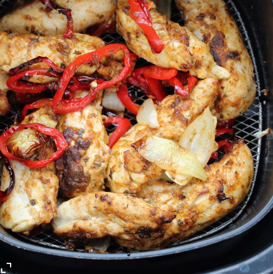

Air Fryer Chicken Fajitas Recipe

Chicken fajitas in the air fryer doesn't get any easier than this.
The chicken stays nice and moist while the vegetables have a nice crisp to them.
Add 2 minutes of cook time if you prefer softer veggies.
Ingredients
- 1 medium red bell pepper
- 1 medium green bell pepper
- 1 large onion
- 3 teaspoons of olive oil
- salt and pepper to taste
- 1 pound chicken tenders
- 2 teaspoons fajita seasoning
- 8 flour tortillas, warmed
Steps
- Place bell pepper strips and onion petals in a large bowl. Drizzle 2 teaspoons of olive oil over the top and season with salt and pepper. Stir until evenly combined.
- Place chicken strips in a separate bowl and sprinkle with fajita seasoning. Drizzle with remaining 1 teaspoon olive oil and mix until evenly combined with your hands.
- Preheat an air fryer to to 350 degrees F (175 degrees C). Add chicken to the basket and cook for 12 minutes, shaking halfway through cook time. Transfer to a plate to let rest while you cook the vegetables.
- Add vegetable mixture to the basket of the air fryer and cook for 14 minutes, shaking halfway through cook time.
- Divide chicken and vegetable mixture among tortillas.
Recipe taken from allrecipes.com, this is just an HTML exercise. I didn't create this recipe, but it'll probably cook it because it looks good.